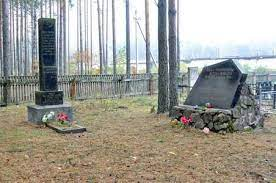
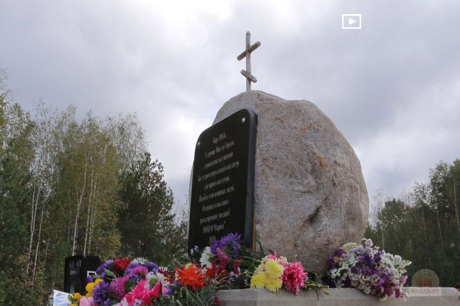
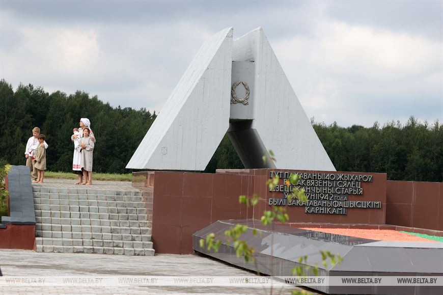
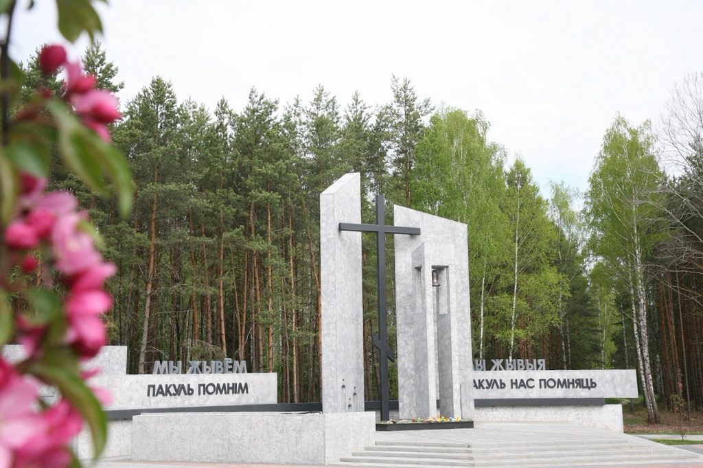
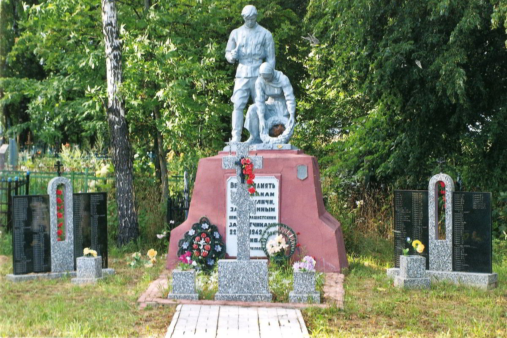

Память о прошлом – забота о будущем
Память Опалённая Войной
Интерактивная карта «Память, обожженная войной» - это электронная карта, работающая в режиме двустороннего диалогового взаимодействия человека(пользователя) и компьютера и представляет собой визуальную информационную систему. Карта является проводником к информации о 114 населенных пунктах (приложение), уничтоженных или сильно пострадавших на территории Бобруйской области в годы Великой Отечественной войны в границах по состоянию на сентябрь 1944 года.
Галерея

Старые Дороги

Микуль

Усакино

Ола
Заелица

Козуличи